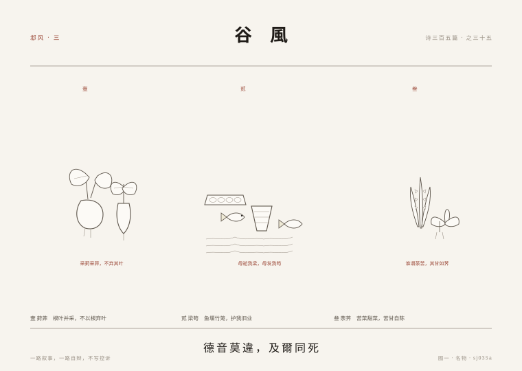
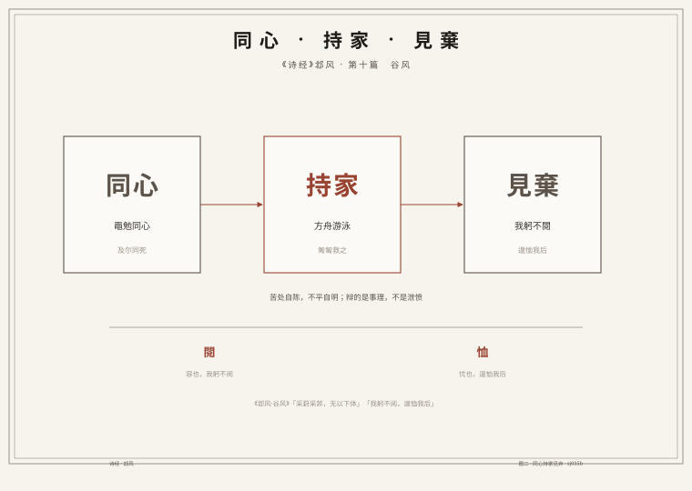

第三十五篇 谷风
邶风 · 之三 SJ035
朗读 · 普通话
依经文原文朗读，章次不读出；配古琴底乐，不改速、不加拖腔。全库同一音色（豆包 TTS），非播音员录制。
一 解题
诗三判：
- 谁在说：一个被丈夫弃逐的妇人。她一路走、一路说：从当年同心说起，说到持家济困，再说到今日被弃；自辩其苦，而不恶声詈骂。
- 说什么事：和风习习，阴雨相随；本该勉力同心，不该动怒。采葑采菲，不能因为根美恶就连叶也弃了；善言不相背，愿与你同死。出门迟迟，心中不忍；你不远送，只送到门槛。谁说荼菜苦？在我甜如荠菜。你们新婚安乐，如兄如弟。泾水因渭水之浊方见其清；新婚乐得轻贱我。别动我的鱼堰，别开我的鱼笱；我自身尚且不见容，何暇顾念身后。水深就筏渡舟渡，水浅就泅渡游渡；家有余无，我都勉力求来；邻家有丧，我匍匐去救。你不爱我，反以我为仇；既拒我之善，像货物卖不出去。昔日共忧共困，与你颠沛；如今日子好了，把我比作毒物。我藏的美菜，本用来备冬；你们新婚，拿我来御穷。暴怒相加，又留给我劳苦；不念从前，曾经爱过我。
- 为何编在此：前一篇写待渡之守，此篇写被弃之辩。礼失之世，夫妇之道先坏；诗不替被弃者讨骂名，只把往日同心与今日凉薄并陈，是邶风一卷里情最长、辩最平的一篇。
《毛序》：「《谷风》，刺夫妇失道也。卫人化其上，淫于新昏而弃其旧室，夫妇离绝，国俗伤败焉。」——系于卫俗新昏弃旧室。
朱子《诗集传》：「妇人为夫所弃，故作此诗，以叙其悲怨之情。」——朱子从妇人被弃自叙悲怨。
本库的看法：这首诗的骨在六章一路叙事、一路自辩——苦处自陈，不平自明，而不写成控诉。
「谁谓荼苦，其甘如荠」，苦到极处反说甘；「泾以渭浊」，浊中见清。她护梁护笱，护的是旧日家业；「我躬不阅，遑恤我后」，身已不容，身后更无可顾。读此篇最忌看成骂夫：辩的是事理，不是泄愤；留的是旧情，不是争胜。
二 经文
第一章
習習谷風，以陰以雨。黽勉同心，不宜有怒。采葑采菲，無以下體？德音莫違，及爾同死。
第二章
行道遲遲，中心有違。不遠伊邇，薄送我畿。誰謂荼苦，其甘如薺。宴爾新昏，如兄如弟。
第三章
涇以渭濁，湜湜其沚。宴爾新昏，不我屑以。毋逝我梁，毋發我笱。我躬不閱，遑恤我後。
第四章
就其深矣，方之舟之。就其淺矣，泳之游之。何有何亡，黽勉求之。凡民有喪，匍匐救之。
第五章
不我能慉，反以我為仇。既阻我德，賈用不售。昔育恐育鞫，及爾顛覆。既生既育，比予於毒。
第六章
我有旨蓄，亦以御冬。宴爾新昏，以我御窮。有洸有潰，既詒我肄。不念昔者，伊余來塈。
分章：毛传、朱子皆六章，章八句。一章追昔同心；二章送别之薄；三章自明清浊、护业顾后；四章追叙持家济困；五章今昔对勘；六章收束于御穷与旧情。由昔及今，由家及身，章法层层剥落。
三 韵读
| 一 |
雨、怒（魚部）；菲、違、死（微部） |
魚部／微部 |
| 二 |
遲、違、邇、畿（微部）；苦、薺（魚部） |
微部／魚部 |
| 三 |
濁、沚（幽部）；梁、笱（魚部）；閱、後（月部） |
幽部／魚部／月部 |
| 四 |
舟、亡、求（幽部）；喪、救（陽部） |
幽部／陽部 |
| 五 |
慉、仇、售（幽部）；鞫、覆、育、毒（覺部） |
幽部／覺部 |
| 六 |
蓄、冬（幽部）；窮（文部）；肄、塈（質部） |
幽部／文部／質部 |
一章魚部切紧写怒，微部绵长写同心；二章微部低回不忍，魚部一翻落到「甘如荠」；三章幽部沉、魚部宽、月部收束，一层比一层无可顾；四章幽部写持家之细，陽部振起写济困之勇；五章幽部怨而不怒，覺部入声落到「毒」；六章幽部备冬，文部写穷，質部急收于「塈」。全篇落脚声是「伊余来塈」——不念从前，唯有旧情一点未绝。
四 字义与名物
- 習習——和舒之风。一说连续大风。不是轻飘无力。
- 谷風——山谷之风，一说东风。
- 黽勉——勉力、尽力。
- 葑（fēng）——蔓菁，芜菁一类。
- 菲——萝卜一类，根可食。
- 下體——根。采葑采菲，不弃其叶，喻不以根之美恶弃叶。不是身体下身。
- 德音——善言、令闻。
- 違——背、弃。
- 遲遲——舒缓难进。
- 中心有違——心中不忍相离。
- 伊邇——如此相近。
- 薄——语助，勉。
- 畿——门内、门槛。
- 荼（tú）——苦菜。
- 薺（jì）——甜菜，味甘。
- 宴爾——安乐貌。
- 新昏——新婚。
- 涇、渭——二水相汇；涇以渭之浊见其清。
- 湜湜（shí shí）——水清见底貌。
- 沚——水中小洲。一说「止」，水止澄。
- 屑——洁；不屑以，即不与我相洁。
- 逝——往、入。
- 梁——鱼堰，拦水捕鱼的石堰。
- 笱（gǒu）——鱼笥，竹制捕鱼笼，置堰口迎鱼。
- 躬——自身。
- 閱——容、见容。
- 遑——暇。
- 恤——忧、顾念。
- 方——筏；作筏渡水。
- 舟——用舟渡水。
- 泳——潜行水中；游，浮行水上。
- 亡——无。
- 喪——丧事。
- 匍匐——伏地而行，尽力以赴。
- 慉（xù）——爱、蓄养。
- 仇——仇雠。
- 阻——拒、塞。
- 賈（gǔ）——商贾，售卖。
- 鞫（jū）——穷、困。
- 顛覆——倾危困顿。
- 毒——毒物。
- 旨蓄——美藏的菜蓄。
- 御冬——备冬。
- 洸潰——武猛暴怒貌。
- 詒——遗、致。
- 肄（yì）——劳苦、罪累。
- 塈（jì）——爱、息。
五 今译
第一章
和缓的山谷风，伴着阴、伴着雨。本该勉力同心，不该动怒。采蔓菁、采萝卜，不能因为根就把叶也弃了？善言不相违背，愿与你同死。
第二章
出门走得缓缓，心中不忍相离。你不远送，只送到门槛。谁说荼菜苦？在我甜如荠菜。你们新婚安乐，亲密如兄如弟。
第三章
泾水因渭水之浊，方见其清。你们新婚乐得轻贱我。别动我的鱼堰，别开我的鱼笱。我自身尚且不见容，何暇顾念身后之事。
第四章
遇着深水，就筏渡、舟渡；遇着浅水，就泅渡、游渡。家有余无，我都勉力求来；邻家有丧，我匍匐前去救助。
第五章
你不爱我，反以我为仇。既拒绝我的善意，像货物卖不出去。昔日共忧共困，与你颠沛；如今日子好了，把我比作毒物。
第六章
我藏的美菜，本用来备冬；你们新婚，拿我来抵御穷困。暴怒相加，又留给我劳苦；不念从前，曾经爱过我。
译注：「下体」译根；「不屑以」译不与我相洁；「梁」「笱」为鱼堰、鱼笥；「阅」译见容，「恤」译顾念；「方」「舟」作动词，筏渡、舟渡；「慉」译爱；「贾用不售」如货不售；「育恐育鞫」共忧共困；「塈」译爱。
六 章旨
一章：追昔同心。风雨相随，黽勉同死；起笔便把旧约摆正。
二章：送别之薄。迟迟不忍，薄送于畿；以苦为甘，反衬新昏之乐。
三章：自清护业。浊中见清，梁笱不忍他人轻动；身不阅，后不恤。
四章：持家济困。深浅皆渡，有无皆求；有丧必救，写尽平日为人。
五章：今昔对勘。昔共颠覆，今比于毒；德阻如货不售。
六章：御穷旧情。旨蓄御冬，反以我御穷；暴怒留累，末了只念昔爱。
一章立约，二章见薄，三章自清，四章叙劳，五章对勘，六章收情。全篇不骂一人，只把「昔」与「今」摆在一处：同心是真，持家是真，被弃也是真。
此即本卷「夫妇失道」之诗，怨而不失其平。
七 诗教
- 赋：六章皆直陈旧事与今情，赋为主；风雨、葑菲、梁笱、荼荠，皆即物托情。
- 观：可观一「劳」。持家济困、匍匐救丧，观其平日为人；被弃而旧日之劳不诬。
- 群：所念是一家之人；「凡民有丧，匍匐救之」，又推及邻里乡党，群道在我。
- 怨：怨在见弃、在轻贱、在暴怒；怨而不詈，不播恶声，不毁旧约。
八 分寸与边界
- 不可把此篇写成单方控诉、骂夫之诗。诗是叙事自辩，苦甘自陈；恶声詈骂非诗本位。
- 不可把「下体」解作身体下身。下体指葑菲之根，喻取其根不弃其叶。
- 不可把「泾以渭浊」解成泾水被渭水弄浑。是泾以渭之浊反衬己清，清浊在我。
- 不可把「毋逝我梁，毋发我笱」读作嘱新妇守己旧业。是托物申护，身已去而家业不忍他人轻动。
- 不可把「我躬不阅，遑恤我后」解作自身不被容、更不顾后人。是说自身且不见容，何暇顾念身后之事。
九 存疑
- 本事所指：毛序系卫妇弃旧室；朱子从妇人被弃；一说朋友绝交之诗。本库取夫妇弃妇，不采朋友说。
- 「习习」：和舒之风一说，连续大风一说。本库从和舒，与「同心」相应。
- 泾渭孰清：旧说泾清渭浊，或反之。本库取「以浊见清」之喻，不坐实水色。
- 「不我屑以」：屑为洁一说，屑为顾惜一说。本库从不与我相洁。
- 「伊余来塈」：塈为爱一说，为取一说，为息一说。本库从爱，反溯旧情未绝。
十 跨典
- 《小雅·我行其野》「昏姻之故，言就尔居」——同写弃妇；彼归于宗族，此留而自辩。
- 《鄘风·载驰》「百尔所思，不如我所之」——女子自处有行，不因人言而废。
- 《王风·黍离》「悠悠苍天，此何人哉」——怨而不失其正，与本篇怨而不詈同调。
- 《礼记·昏义》「夫妇之义，始于合好，终于长久」——德音同死之约，正昏义之所重。
- 《楚辞·离骚》「怨灵修之浩荡兮，终不察夫民心」——被弃而自明其心，同为千古弃妇之调。
十一 双卡与图
双卡五对：
| 葑菲（采根不弃叶） |
下体（下身，误训） |
| 荼苦甘如荠 |
以苦为怨 |
| 梁（鱼堰）／笱（鱼笥） |
梁笱（误作物名） |
| 閱（见容） |
阅（阅读，误训） |
| 自辩叙事 |
控诉詈骂 |

图一 · 葑菲·梁笱·荼荠 名物图

图二 · 同心—持家—见弃 义理图
读图三处：
- 葑菲画根与叶并置：蔓菁、萝卜识别在块根与大叶；名物图取根、叶两处特写，见采根不弃叶之喻。
- 梁笱画堰口与竹笼：鱼堰横水拦流，笱置堰口迎鱼；水纹与游鱼作指认细节。
- 义理三章以「见弃」收尾：同心—持家—见弃，箭头由昔及今；末尺标出「阅」「恤」，身不见容、后无可恤。